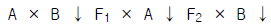

축산기능사 (2005-07-17 기출문제)
1과목: 축산개론
1. 돼지가 체내에서 아라키도닌산을 합성할 수 있는 지방산은?
- 올레인산
- 팔미트산
- 부티르산
- 리놀렌산
(정답률: 81%)

2. 닭의 전염병 중 혈액응집 반응검사로 보균계를 가려내는 것은?
- 추백리
- 계두
- 뉴캐슬
- 콕시듐
(정답률: 58%)
3. 원산지가 아프리카 동북부인 산양의 품종은?
- 자아넨종
- 톡겐부르크종
- 누비안종
- 알파인종
(정답률: 69%)
4. 수정란 이식을 위한 난관내 난자의 채취는 교배 후 몇 일이내에 해야 하는가?
- 2일
- 4일
- 6일
- 8일
(정답률: 82%)
5. 수컷의 주생식 기관은?
- 정소(고환)
- 전립샘
- 정낭샘
- 난관
(정답률: 96%)
6. 한우 장기 비육에 관한 설명 중 옳지 못한 것은?
- 거세우 또는 2살 정도의 수소를 이용하여 3년 이내에 비육을 완료한다.
- 수술, 무혈 거세기 등을 이용하여 거세를 실시하는 것이 좋다.
- 뿔을 깎아 주고, 발굽을 깎아 주는 것은 사양 관리상 필요하다.
- 운동과 방목은 가급적 피하여 비육 효율을 좋게 할 수있다.
(정답률: 90%)
7. 다음 그림의 교잡법은 무슨 교잡법을 나타내고 있는가?(오류 신고가 접수된 문제입니다. 반드시 정답과 해설을 확인하시기 바랍니다.)

- 2원 교잡
- 퇴교배
- 3원 교잡
- 상호역교배
(정답률: 63%)
8. 생독 백신에 대한 설명으로 잘못된 것은?
- 항원이 살아 있다.
- 면역 효과가 높다.
- 값이 비교적 비싸다.
- 병원성이 일부 잔존한다.
(정답률: 85%)
9. 소의 동결정액의 보존방법으로 액체질소를 많이 이용하는 데 액체질소의 온도로 가장 적당한 것은?
- -79℃
- -110℃
- -183℃
- -196℃
(정답률: 86%)
10. 닭의 카니발리즘의 원인이 아닌 것은?
- 계사내 직사광선이 들어올 때
- 사료내 염분이 부족할 때
- 조사료함량이 부족할 때
- 사육온도가 적정온도보다 낮을 때
(정답률: 70%)
11. 젖소의 케토시스 증상을 옳게 설명한 것은?
- 탄수화물 대사에 차질이 생겨 우체내에 아세톤 등이 축적되어 발생한다.
- 항생 물질이나 설파제를 주입하여 치료가 된다.
- 두과 청초를 많이 급여하였을 때 발생한다.
- 외과수술에 의하여 이물질을 제거하는 방법으로 치료 된다.
(정답률: 75%)
12. 젖소의 착유시 유의사항으로 틀린 것은?
- 착유작업은 하루 중 아무 때나 불규칙하게 시간이 남는 때를 이용해서 실시한다.
- 착유작업은 항상 위생적이고 정성스럽게 실시되어야 한다.
- 착유가 끝난 기구는 항상 철저히 소독, 건조시켜야한다.
- 착유전에는 전착유를 실시하여야 한다.
(정답률: 94%)
13. 바이러스 감염성인 법정 돼지 전염병으로 변비증상을 일으키며 귀, 목, 엉덩이에 괴사반점이 생기는 것은?
- 돈콜레라
- 돼지뇌염
- 전염성 위염
- 돈단독
(정답률: 71%)
14. 원산지가 영국 해협이고 체형이 젖소 중 가장 작고 유지율이 가장 높은 젖소 품종은?
- 져지
- 건지
- 에어셔
- 홀스타인
(정답률: 79%)
15. 결핍되면 혈당량이 증가하여 당뇨병의 원인이 되는 물질은 어느 것인가?
- 인슐린(insulin)
- 글루카곤(glucagon)
- 항이뇨 호르몬(ADH)
- 황체 형성 호르몬(LH)
(정답률: 92%)
16. 결핍시 다발성 신경염을 일으키는 비타민은?
- 비타민 B12
- 비타민 B6
- 비타민 B2
- 비타민 B1
(정답률: 83%)
17. 토끼의 평균 임신기간은?
- 31일
- 150일
- 280일
- 333일
(정답률: 87%)
18. 덴마크의 재래종에 대요크셔종과의 교잡에 의해 육종된 베이컨형인 대형 백색돈은?
- 듀록종
- 랜드레이스종
- 웰시종
- 스포티드종
(정답률: 85%)
19. 각종 병원균이 서식하는데 필요한 조건이 아닌 것은?
- 일광
- 온도
- 습도
- 산소
(정답률: 78%)
20. 싹이 난 감자나 푸른색 감자를 가축에 급여시 일어나는 식중독 증상의 원인 물질은 무엇인가?
- 아질산
- 고시폴
- 솔라닌
- 아민
(정답률: 88%)
2과목: 사료작물
21. 세포벽 구성성분으로 석회 시용에 의해 공급되는 식물 영양성분은?
- 칼슘
- 인산
- 질소
- 세레늄
(정답률: 65%)
22. 사일리지를 조제하는 가장 간단한 방법으로 재료를 지상위에 퇴적하여 발효시키는 방법의 사일로는?
- 원통 사일로
- 트렌치 사일로
- 벙커 사일로
- 스태크 사일로
(정답률: 66%)
23. 우리나라에서 조사료로 가장 많이 이용되는 농업 부산물은?
- 볏짚
- 고구마 줄기
- 보리 짚
- 옥수수 대
(정답률: 83%)
24. 초지조성 및 사료작물 재배 과정에서 진압을 하는 이유는?
- 모세관현상에 의한 수분공급으로 종자나 식물의 뿌리에 수분흡수를 쉽게 하기 위해
- 뿌리를 지면에 단단하게 고정시키기 위해
- 흙이 바람에 날리는 것을 막기 위해
- 굵은 흙덩어리를 부수기 위해
(정답률: 84%)
25. 화본과 목초와 두과목초의 혼파로 인하여 얻을 수 있는 장점이 아닌 것은?
- 질소의 시비량을 현저히 줄일 수 있다.
- 수확시기의 결정과 같은 재배관리가 쉽다.
- 병충해로 인한 목초의 피해를 최소화 할 수 있다.
- 도복이 방지되고 서릿발 피해가 줄어든다.
(정답률: 56%)
26. 추위는 물론 더위에도 잘 견디고, 한여름철의 가뭄에도 강하나 엔도파이트에 감염되었을 경우 가축에게 장애를 일으키는 목초는?
- 오처드그라스
- 톨 페스큐
- 티머시
- 켄터키 블루그라스
(정답률: 55%)
27. 우리나라에서 양축농가들이 호밀을 재배하는 주된 이유가 아닌 것은?
- 비교적 가을 늦게까지 파종해도 월동이 가능해서
- 이듬해 봄에 일찍 수확을 할 수 있어서
- 답리작으로 재배가 용이해서
- 옥수수에 비해서 가소화양분총량(TDN) 함량이 높아서
(정답률: 78%)
28. 오처드그라스에 대한 설명으로 가장 알맞은 것은?
- 우리 나라에서 적응성이 넓은 목초 중의 하나이며 그늘에서도 잘 자란다.
- 알칼로이드 때문에 가축에 장애를 주는 경우도 있다.
- 추위에 강하기 때문에 우리 나라에서는 대관령 지역에 알맞다.
- 한해살이 벼과(화본과) 목초이다.
(정답률: 65%)
29. 초지내 습지나 다소 선선한 지역에서도 잘 자라며 토양을 가리는 성질이 적어 산성토양, 척박한 토양에도 잘 자라는 사료용 피에 대한 설명이다. 가장 거리가 먼 것은?
- 종자의 생산이 용이하고 많으나 체계적인 종자공급체계가 이루어지지 않고 있다.
- 어릴 때부터 방목하면 청산중독의 위험이 있어서 충분히 자란 다음 이용한다.
- 파종 후 2-3개월 내에 풋베기 생산이 가능하다.
- 다른 사료작물에 비하여 재배하기가 쉽다.
(정답률: 59%)
30. 작부조합을 위한 초종이나 품종 선택시 고려하여야 할 사항이 아닌 것은?
- 수출가능성
- 품질의 우수성
- 생산 비용과 노력
- 건물 및 가소화영양소 수량
(정답률: 74%)
31. 어린식물의 활력이 강하고 기호성이 좋으나 내한성이 낮은 목초로 논 뒷그루로도 이용되는 목초는?
- 오처드 그라스
- 토올 페스큐
- 이탈리안 라이그라스
- 켄터키 블루그라스
(정답률: 75%)
32. 양호한 사일리지 조제를 위해 재료의 자르기(절단)에 대한 설명으로 알맞은 것은?
- 수분함량이 높은 것은 짧게 자른다.
- 수분함량이 낮은 것은 짧게 자른다.
- 잎이 많고 부드러울 때에는 짧게 자른다.
- 거칠고 여물 때에는 길게 자른다.
(정답률: 72%)
33. 초지의 이용방법 중 생초를 그대로 베어서 축사에 운반한 다음 급여하는 방법은?
- 풋베기
- 방목
- 건초
- 사일리지
(정답률: 86%)
34. 가축을 놓아 풀을 뜯고 발굽에 의하여 들풀이 죽거나 땅에 묻히게 한 후 목초를 파종하는 방법은?
- 집약초지
- 겉뿌림법
- 화입법
- 제경법
(정답률: 86%)
35. 씨앗과 거름이 직접 닿지 않기 때문에 거름의 염해를 줄이고, 생산량이 높은 초지를 만들 수 있는 파종방법은?
- 흩어뿌림
- 줄뿌림
- 대상 줄뿌림
- 점뿌림
(정답률: 74%)
36. 방목초지를 몇 개의 목구로 나누어 돌아가며 방목하는 방법을 무엇이라 하는가?
- 윤환방목
- 고정방목
- 주야방목
- 임간방목
(정답률: 86%)
37. 사료작물 내 청산함량을 낮추는 방법이 아닌 것은?
- 질소비료를 많이 사용한다.
- 초장이 120~150cm 이상 자랐을 때 이용한다.
- 5시간 이상 예건시켜 이용한다.
- 담근먹이로 조제한다.
(정답률: 74%)
38. 건초제조에 쓰이는 기계가 아닌 것은?
- 헤이컨디셔너
- 테더
- 베일러
- 목초절단기
(정답률: 63%)
39. 사일리지용 옥수수의 재배에 적합한 토양은?
- 배수가 잘 되는 기름진 땅이 좋다.
- 산성 토양이 좋다.
- 경토가 얕아야 좋다.
- 염분이 많은 땅일수록 좋다.
(정답률: 82%)
40. 벼멸구에 의하여 감염된다고 하며 생육초기에는 마디사이가 짧아지고 짙은 녹색을 띠다 결국 죽어 없어지며 생육후기에 감염되면 잎의 뒷부분에 엽맥을 따라 돌기가 형성되는 옥수수의 병은?
- 그을음무늬병
- 흑수병(깜부기병)
- 흑조위축병
- 깨씨무늬병
(정답률: 74%)
3과목: 축산경영
41. 한 농가에서 모돈을 사육하여 자돈을 생산하고, 생산된 자 돈을 비육하여 비육돈을 생산·판매하는 경영형태는?
- 번식경영
- 일관경영
- 비육경영
- 종돈경영
(정답률: 61%)
42. 자본 등식이 바르게 표기된 것은?
- 자산 + 부채 = 자본
- 자산 + 자본 = 부채
- 부채 × 자산 = 자본
- 자산 - 부채 = 자본
(정답률: 80%)
43. 한우고기의 수요변화와 관련된 설명으로 바르게 설명한 것은?
- 국민들의 소득수준이 증가할수록 고급 브랜드육을 선호 하는 경향이 있다.
- 돼지고기 가격이 크게 상승하면 한우고기의 수요는 감소하는 경향이 있다.
- 한우고기 가격이 상승하면 한우고기 수요도 따라서 증대되는 경향이 있다.
- 한우고기 가격이 하락하면 한우고기 수요도 따라서 감소하기 마련이다.
(정답률: 89%)
44. 한우비육경영의 생산비 중에서 가장 큰 비중을 차지하는 비목은?
- 밑소비(가축비)
- 농후사료비
- 가축약품비
- 고용노임비
(정답률: 65%)
45. 축산경영진단 순서를 바르게 연결한 것은?
- 경영실태의 파악 → 문제의 분석 → 문제의 발견 → 대책과 처방
- 문제의 발견 → 경영실태의 파악 → 문제의 분석 → 대책과 처방
- 문제의 발견 → 문제의 분석 → 경영실태의 파악 → 대책과 처방
- 경영실태의 파악 → 문제의 발견 → 문제의 분석 → 대책과 처방
(정답률: 70%)
46. 다음 낙농경영에 있어 고정자산에 해당하는 것은?
- 사료비
- 외상매출금
- 착유우
- 소농기구
(정답률: 68%)
47. 전업적인 축산경영이 갖는 장점은?
- 노동의 숙련도를 높이고 분업의 이익을 얻을 수 있다.
- 노동배분의 평균화를 기할 수 있다.
- 자금회전을 원활히 할 수 있다.
- 경제적 위험을 분산시킬 수 있다.
(정답률: 77%)
48. 양돈 경영형태를 사육목적에 따라 분류한 것으로 틀린 것은?
- 종돈생산 경영
- 번식돈 경영
- 비육돈 경영
- 전업적 경영
(정답률: 79%)
49. 축산소득의 내용으로 맞는 것은?
- 자본이자 + 순수익 + 노력비 + 차입금이자 + 이윤
- 순수익 + 노력비 + 고정자본이자 + 유동자본이자 + 차입금이자
- 자가노력비 + 고정자본이자 + 유동자본이자 + 토지자본 이자 + 순수익
- 고정자본이자 + 순수익 + 토지자본이자 + 차입금이자 + 고용노력비
(정답률: 61%)
50. 우유의 생산비를 절감하기 위해 적절한 방법은?
- 착유우의 번식간격 확대
- 착유우의 생산수명 단축
- 착유우의 두당 산유량 증대
- 사료 급여량 증대
(정답률: 82%)
51. 축산물유통에 있어서 저장 및 보관기능이 수행되는 필요성 이라고 볼 수 없는 것은?
- 수급조절
- 생산물의 성질
- 투기
- 차별가격
(정답률: 62%)
52. 축산물 생산비 계산의 대상에 대한 설명이 잘못된 것은?
- 생산비는 화폐가치로 표시할 수 있어야 한다.
- 생산비는 생산하고자 하는 축산물에 실제로 소비되었다고 하는 사실이 있어야 한다.
- 재해·도난 등 불가항력적인 요인에 의하여 발생한 비용은 생산비에 포함하지 않는다.
- 축산경영에서 지불되는 정치적·종교적 기부금도 경제 가치의 소비이므로 생산비 계산에 포함시켜야 한다.
(정답률: 64%)
53. 축산물 유통에 있어서 비가격경쟁의 수단이라고 볼 수 없는 것은?
- 제품의 차별화
- 서비스의 차별화
- 판매촉진 활동
- 가격할인
(정답률: 85%)
54. 채란 양계의 변동 비목이 아닌 것은?
- 생산사료비
- 건물수선비
- 농구수선비
- 유지사료비
(정답률: 38%)
55. 축산물 가격의 기능이라고 볼 수 없는 것은?
- 양축부분과 비양축부분간의 자원이동을 유발시킨다.
- 농공간의 소득이전을 일으킨다.
- 축산물 가격의 상대적 상승은 양축농가의 소득효과를 통해서 농촌 저축의 증대를 유도한다.
- 축산물 가격의 상대적 하락은 생산자와 소비자를 동시에 보호할 수 있다.
(정답률: 72%)
56. 어느 낙농농가의 젖소 1두당 연간 산유량은 5,000kg, 총사육관리비용은 3,500,000원, 경영비는 2,000,000원, 부산물 수입은 500,000원이라고 할 때, 우유 1kg당 생산비는?
- 300원
- 400원
- 600원
- 700원
(정답률: 49%)
57. 다음 중 고정자산인 트랙터의 감가 원인이 아닌 것은?
- 사용 소모에 의한 감가
- 자연적 소모에 의한 감가
- 경제적 효율에 의한 감가
- 부적응에 의한 감가
(정답률: 46%)
58. 축산물 등급 제도의 목적으로 볼 수 없는 것은?
- 축산물의 품질향상과 원활한 유통
- 가축개량의 촉진
- 축산물의 농가수취가격 인하
- 축산농가의 소득향상과 소비자 편익증대
(정답률: 72%)
59. 축산경영에서 생산요소가 아닌 것은?
- 자본
- 노동력
- 조수익
- 토지
(정답률: 52%)
60. 양돈경영의 경쟁력 제고 방안으로 적합하지 않는 것은?
- 부업경영 유지
- 생산기술 향상
- 생산비 절감
- 저렴한 고품질 돈육생산
(정답률: 63%)